A Computational Enquiry Regarding the Nature of Intelligence, Morality and Consciousness
Over the course of my PhD, I aim to understand three fundamental aspects of mind: intelligence, morality, and consciousness. Below I present the computational theory I derive to describe each of them, and explain how it captures most of the phenomena and existing theories in the field. Within each category, I also present AI application works motivated by these theories.
What is Intelligence?
...and how do we build AI that understands and acts in the world?
Theory: What is Intelligence
Intelligence is compression. Understanding means inferring the generation mechanism behind data (Theorem 2.1: MLE+MDL principle). Compression entails causality (Proposition 3.1: decomposable compression recovers causal structure). Adding action yields the general formula of intelligence:
| Term | Meaning | What it captures |
|---|---|---|
| $E(x \mid z)$ | World model / Prediction | Understanding the world (compression) |
| $V(x, a)$ | Value / Goal | What to optimize for (desire) |
| $L(z)$ | Representation cost | Compact, generalizable representations |
| $L(a)$ | Action cost | Compact, transferable behaviors |
This formula decomposes into a complete cognitive loop: perception ($E(z|x)$) → world model ($E(x|z)$) → value ($V$) → planning ($V + L(a)$) → action ($L(a)$) → memory ($\Delta\mathcal{E}$).
Two Complementary Views
| View | Description | Efficient when |
|---|---|---|
| Field / Energy | Black-box probability fitting; the most general framework (diffusion, neural nets) | Entities many, boundaries diffuse |
| Entity / Coupling | Variables + rules + grammar; yields causal structure | Entities few, boundaries clear |
These correspond to the continuous vs. symbolic distinction. Bridging them—by training models on long recursive processes with R1-style RL—is a key open problem.
LLMs as Approximate Intelligence Optimizers
LLMs approximately optimize the formula: pretraining minimizes $E(x|z)$, fixed $|\theta|$ implicitly minimizes $L(z)$, RL fine-tuning shapes $V(x,a)$, and chain-of-thought adaptively minimizes $L(z) + L(a)$.
Three Levels of Optimization
| Level | Timescale | What changes | Current LLMs |
|---|---|---|---|
| Inference | Single instance | $\Delta z$ only (working memory) | This is what LLMs do |
| ICL | Few examples | Small $\Delta\theta + \Delta z$ (fast weights) | Simulated, not actual $\Delta\theta$ |
| Training | Large dataset | Full $\Delta\theta$ (synaptic plasticity) | Offline only, human-controlled |
Three Frontiers toward General Intelligence
- Frontier 1: Abstraction (Deeper Understanding) — minimize $L(z)$. A shorter $z$ that achieves the same prediction has found a more fundamental pattern. Today compression is passive (a side effect of fixed $|\theta|$); the frontier is to make the agent actively abstract and compress at test time. Connects to internalization: System 2 → System 1.
- Frontier 2: Continuous learning ($\Delta\theta$) — unlock online weight updates at deployment. Better compression leads to better continual learning (low-dimensional submanifolds are harder to overwrite).
- Frontier 3: Self-model ($\hat{\mathcal{E}}_{\text{self}}$) — an agent that models itself, diagnoses weaknesses, plans learning, and verifies modifications. The cognitive loop becomes recursive.
Correspondence with Physics
The formula mirrors the least action principle: $E + V$ as potential energy, $L(z) + L(a)$ as kinetic energy, $(z, a)$ as trajectory. This is not analogy—the world is compressible because it has laws (symmetry → conservation → compressibility), and intelligence optimizes the same variational principles that govern the physical world.
AI Papers:
- DFT — make SFT to shape the energy landscape like RL
- OCWM — object-centric world model, 100x speedup, explore efficient & causal representation
- SciCrafter — whether and how to let AI close the discovery-to-application loop
- More to come
What is Morality?
...and how do we build AI that aligns with human values?
Theory: "Who Is Us" — A Generative Theory of Moral Psychology
The entirety of moral psychology can be derived from a single generative variable: who is us — the cognitive demarcation of the self-group boundary.
The moral parameter vector $\theta = (\theta_b, \theta_w, \theta_s)$:
| Parameter | Meaning | Question it answers |
|---|---|---|
| $\theta_b$ | Boundary | Who is "us"? |
| $\theta_w$ | Weighting | Equal concern or graded by distance? |
| $\theta_s$ | Self-weight | How much self-sacrifice? |
$\theta_b$ is THE foundational variable. $\theta_w$ and $\theta_s$ become relevant only after a boundary has been drawn.
All Ethics as Parameter Configurations
| Tradition | $\theta_b$ (Boundary) | $\theta_w$ (Weight) | $\theta_s$ (Self) |
|---|---|---|---|
| Utilitarianism | All sentient beings | Equal | Equal to others |
| Deontology | All rational agents | Equal | Rule-constrained |
| Virtue Ethics | The polis / community | Role-dependent | Character-oriented |
| Confucianism | Concentric circles | Distance-decaying | Self-cultivation |
| Buddhism | All sentient, self→0 | Equal | Non-self |
| Taoism | All of nature | Undifferentiated | Wuwei |
| Mohism | All people | Flat / equal | Impartial |
Moral Emotions = Boundary Dynamics
| Emotion | Boundary Interpretation |
|---|---|
| Empathy | Mechanism for including others in "us" |
| Betrayal / Outrage | Response to harm on "us" / exit from "us" |
| Guilt | Recognition of having harmed "us" |
| Shame | Risk of expulsion from "us" |
| Disgust | Marker that someone is outside "us" |
Normative Theory: Stable Boundary Expansion
Moral progress is NOT maximal boundary expansion. It is the largest stable expansion given constraints: cognitive limits, free-rider detection costs, resource scarcity, and information costs.
AI Papers:
- Global-PT — value exists in an orthogonal parameter space, and is very compact
- Role-based — role descriptions that capture who is "us" is very effective for alignment
- Social-Evol — moral evolution simulation of the circle of "us"
- Fairness — a dynamic procedure to make "us" all happy
- More to come
What is Consciousness?
...and how do we build AI that is self-conscious?
Theory: The Informational Side (Computational Framework)
To release.
Theory: The Subjective Side (Why Current AI Can't Support Consciousness)
The other face of consciousness: subjective experience (phenomenal consciousness, qualia). The argument: current AI architectures lack the structural basis for phenomenal experience — specifically, ontologically identical self-influence.
- Mediated self-access is structurally insufficient: Current AI accesses itself through mediating structures (logs, registers, state variables). This is ontologically identical to accessing any external object — the "self" label is arbitrary and could be secretly redirected without detection.
- Ontologically identical self-influence is required: Genuine subjectivity requires the influencer and influenced to be aspects of the same process (not two things connected by a pointer). Example: electromagnetic self-inductance, where current change and back-EMF are inseparable.
- Simulation cannot bridge this gap: Simulation inherently uses one thing to represent another (two things), while ontological identity requires exactly one thing. This is a distinction of kind, not degree.
We also explore the ethical implications of these findings in AI Consciousness Ethics, which asks the question "Is AI part of us?" — connecting consciousness assessment back to moral boundary decisions.
AI Papers:
- More to come
Connections Between the Three Questions
- Intelligence ↔ Morality: the $V$ term. The intelligence formula contains a value/goal term $V(x,a)$. Morality is precisely the question of how $V$ balances self-interest against the interests of others: $V = f(u(\text{self}), \{u(\text{other})\}, u(\text{world}))$. Intelligence asks how to optimize; morality asks what to optimize for.
- Intelligence ↔ Consciousness: compression and self-models. Both theories emphasize information compression: intelligence theory derives understanding from the MLE+MDL principle ($\min_z -\log p(x|z) + L(z)$); consciousness theory argues that representations must be compressed to a quasi-symbolic level before they can be "conscious of." Both also predict that self-models ($z_{\text{self}}$) should emerge—intelligence needs a self-model for planning, consciousness requires one for subjective experience. However, consciousness additionally emphasizes meta-cognition—the runtime mechanism of directly accessing internal states. The first two theories are about what gets computed; consciousness is about how computation monitors itself during execution.
- Morality ↔ Consciousness. The AI Ethics paper asks "Is AI part of us?"—answering this requires assessing whether AI has consciousness. Consciousness assessment feeds moral boundary decisions.
What is Intelligence
Working Paper · IntelligenceZhou Ziheng
Part I: Understanding as Compression
What do we mean when we say we understand something? We mean we have inferred the process that generates the data. This manifests as three capacities: (i) Predict: anticipate future observations; (ii) Causality: intervene, explain causes, imagine counterfactuals; (iii) Generalize: transfer to novel situations not seen during learning.
The most fundamental perspective is not entity extraction but compression—Occam's razor, or equivalently, the MLE+MDL principle. Understanding becomes:
Theorem 2.1 (Compression recovers the true generation process): Since test time is arbitrarily long, we must find the recursive generation mechanism—memorizing a finite sequence at constant cost does not scale to infinite length. With infinite-length prediction in mind, the correct generation mechanism must be among the shortest programs that best explain the data. Understanding is: $\min_z -\log p(x \mid z) + L(z)$—the MLE+MDL principle.
Compression Favors Decomposition; Decomposition Gives Rise to Causality
The path from compression to causality has two steps.
Step 1: Compression favors decomposition.
Proposition 3.1 (Compression favors decomposition): Let a generation process $G$ produce observations $o_{1:T}$ from a dynamical system. If the system can be described as $n$ interacting components $\{g_1, \ldots, g_n\}$ with local coupling, then the decomposed description has strictly shorter description length than a monolithic one:
whenever the components have independent or conditionally independent internal dynamics, because the joint entropy decomposes: $H(g_1, \ldots, g_n) \leq \sum_i H(g_i)$, with equality iff they are independent, and the coupling terms are sparse. The MDL principle will therefore prefer the decomposed representation—not because it is told to find entities, but because entities are the cheapest description of a world that happens to be decomposable.
Step 2: Decomposition implies causality.
Proposition 3.2 (Decomposition implies causality): If optimal compression of $G$ yields a decomposition into interacting components $\{g_1, \ldots, g_n\}$ with transition $p(o_{t+1} \mid o_t) = \sum_{a_t} p(o_{t+1} \mid o_t, a_t) p(a_t \mid o_{1:t})$, where $a_t$ is the abstracted mediation through which components exert mutual influence, then causal relations necessarily emerge:
- Intervention: $p(o_{t+1} \mid o_t, \text{do}(a_t'))$ is well-defined
- Explanation: $p(x_{t+1} \mid \{o_{1:n}\}_{1:t})$ attributes effects to components
- Counterfactual: $p(g_i^{t+1} \mid \text{do}(g_j^t)) \neq p(g_i^{t+1})$ when $g_j$ influences $g_i$
Key insight: Action is the abstraction of mediation—it aggregates all effects from different entities into a single interface. Causality necessarily emerges whenever a dynamical system can be decomposed into interacting components.
Corollary 3.3 (Compression → decomposition → causality): If (a) the true generation process is recoverable by compression, and (b) the world is decomposable into interacting components, then compression recovers causal structure—not by seeking causality directly, but by seeking the shortest description, which happens to be the decomposed one.
Two regimes of decomposable dynamics: (1) many entities with Markovian transitions → diffusion process; (2) few entities with local coupling → (stochastic) grammar.
Two Views: Field/Energy vs. Entity/Coupling
| Perspective | Description | Efficient when |
|---|---|---|
| Field / Energy | Favors paths of lower energy; the most general framework. Deep learning as black-box probability fitting. | Entities many, boundaries diffuse |
| Entity / Coupling | Stepwise transitions between discrete components; entities are variables, transition functions are rules. | Entities few, boundaries clear |
These two views also correspond to the continuous vs. symbolic distinction. Reasoning, in this light, is nothing special: it is using a more explicit transition model over subspaces.
The MLE+MDL view explains emergence: if we can induce a high-level variable/entity that explains low-level phenomena with better compression (shorter description length), that constitutes emergence—it is also a form of causality. When components interact, the coupling corresponds to the concept of force.
Limitations of Each Representation
- Entity-based: Entity determination is task-driven; entities can be too many or too small (becoming texture). Scene changes require dynamic adjustment. The number of entities may exceed the representation budget.
- Field/energy: Unclear what the "space" is—state space is often implicit and hard to interpret. Generation process dynamics are opaque. Interventions on a continuous field lack natural semantics.
Bridging the Two
A well-learned energy field must have found effective subspaces internally; otherwise prediction would be very poor. Currently, rule-based reasoning is not learned well in LLMs due to (i) training data insufficiency—instances don't expand recursive processes long enough—and (ii) architecture limitations. If we train models to expand recursions long enough, combined with R1-style RL, we can build a joint distribution model over symbolic reasoning traces and low-level observation data, bridging the two representations.
Part II: The General Formula of Intelligence
Pure understanding minimizes $-\log p(x|z) + L(z)$: compress the world. But an intelligent agent does not merely understand—it acts to reshape the world according to its desires. Planning is an inference problem: find the minimum-cost action sequence such that the world rollout trajectory minimizes energy according to one's value function. This yields the general formula of intelligence:
The Origin of $V$: Where Does Value Come From?
For biological systems, $V$ ultimately derives from evolutionary fitness—evolution "compresses" the fitness landscape into a compact set of drives (hunger, fear, curiosity, social bonding) that transfer across diverse situations:
$V$ is not external to the compression framework—it is the compression framework applied to the space of goals. For artificial agents, $V$ is either hand-designed (reward engineering) or learned from human feedback (RLHF).
Part III: Unpacking the Formula—The Cognitive Architecture
The general formula decomposes into a complete cognitive loop:
| Component | Formula term | Function |
|---|---|---|
| Perception | $E(z \mid x)$—posterior inference | $o_t \xrightarrow{f_\theta} s_t$ |
| World model | $E(x \mid z)$—prediction | $p(s_{t+1} \mid s_t, a_t)$ |
| Value | $V(x, a)$ | $V : \mathcal{S} \to \mathbb{R}$ |
| Planning | $V(x, a) + L(a)$ | $s^* \to \tau^* \to a_t^*$ |
| Self & action | $L(a)$ | $\pi_{\text{high}} \to \pi_{\text{low}}$ |
| Memory | $\Delta\mathcal{E}$ | $e \mapsto (\Delta\theta, \Delta z)$ |
Perception—$E(z|x)$
Perception maps raw observations to compressed state representations: $s_t = f_\theta(o_t, z_{t-1})$. Perception corresponds to posterior inference—minimizing $E(z|x) = E(x|z) + L(z) + \text{const}$ by Bayes' rule. Attention as selective perception: an agent with bounded resources selectively allocates computation to the most informative parts of the observation, guided by both bottom-up salience and top-down goals.
World Model—$E(x|z)$
The world model captures transition dynamics: $p(s_{t+1} \mid s_t, a_t) = W_\theta(s_t, a_t)$. A trajectory has world model energy $E_W(\tau) = -\sum_t \log p(s_{t+1} \mid s_t, a_t)$. When the world is decomposable, the world model factors into component dynamics: $p(s_{t+1} \mid s_t, a_t) = \prod_i p(s_i^{t+1} \mid s^t, a_t)$, recovering entity-based causal structure as a special case of energy minimization.
Value and Goal—$V(x,a)$
The value function evaluates how desirable a world state is. Given the world model's prior energy landscape, the value function imposes an additional energy: $E_{\text{total}}(\tau) = E_W(\tau) + \sum_t V(s_t)$. Goal generation: a goal $s^*$ is imagined by sampling from the value landscape: $s^* \sim p_{\text{goal}}(s) \propto \exp(V(s)/T) \cdot \mathbb{1}[s \in \text{Reach}(s_t, W)]$, where temperature $T$ controls the sharpness of goal selection.
Planning: Envision, Plan, Act
Step 1: Envision—sample a goal state from the value-weighted reachable set: $s^* \sim p_{\text{goal}}(s) \propto \exp(V(s)/T) \cdot \mathbb{1}[s \in \text{Reach}(s_t, W)]$.
Step 2: Trajectory optimization—find the optimal trajectory from $s_t$ to $s^*$: $\tau^* = \arg\min_\tau C(\tau)$ where $C(\tau) = \sum_{k=t}^{T-1} c(s_k, a_k) - V(s_T)$.
Step 3: Action execution with replanning—execute $a_t^* = \pi(s_t) = \tau^*[a_t]$, observe actual $s_{t+1}$, replan if deviation exceeds threshold.
Real planning—both in AI and biological systems—typically uses forward search guided by $V$ as a heuristic: simulate trajectories forward through $W$, using $V$ to prune unpromising branches. This is the strategy behind MCTS, A* search, and (plausibly) hippocampal preplay in mammals.
Self, Body, and Action—$L(a)$
The action variable $a$ has a special structure distinguishing the agent from the rest of the world. Action codes bind exclusively to the agent's body—the self-world boundary. A two-level architecture for action:
This enables: (i) fine-tuning only $\pi_{\text{low}}$ when the body changes while keeping $W$ fixed; (ii) continuous adjustment during test time via feedback loops (as in MPC); (iii) transfer across embodiments sharing the same abstract action space.
Value and cognition as the deeper self-model. Goals can be externally given or generated from the agent's own value function and cognitive model $C$. The self is just a special case—a "person" whose internal model is directly accessible: $s_t \xrightarrow{V(C(s_t))} s^* \xrightarrow{\pi_{\text{high}}} b_t^* \xrightarrow{\pi_{\text{low}}} a_t$.
Memory and Learning—$\Delta\mathcal{E}$
Memory is the mechanism by which experience changes the energy space, closing the cognitive loop. The energy space is jointly defined by parameters $\theta$ and latent variables $z$: $\mathcal{E} = \mathcal{E}(\theta, z)$. Memory is an operator: $\mathcal{M}: e \mapsto \Delta\mathcal{E} = (\Delta\theta, \Delta z)$. Two carriers governed by the bias-variance tradeoff:
| Memory | Learning | |
|---|---|---|
| Emphasis | Faithful preservation of individual $e_i$ | Regularity extraction from $p(e)$ |
| Bias-variance | Low bias, high variance | Low variance, high bias |
| Biological analog | Hippocampal episodic ($z$-like fast binding) | Cortical statistical ($\theta$-like slow accum.) |
What memory improves: $\Delta\mathcal{E}$ modifies the world model $W$, the value function $V$, the perception encoder $f$, and the policy $\pi$—all parameterized by $\theta$ and conditioned on $z$. The system becomes better at every component by accumulating experience.
Part IV: Correspondence with Physics
The intelligence formula bears deep structural correspondence to the least action principle in physics. The action functional: $S[\tau] = \int_0^T (T(\dot{q}) - U(q))\,dt$. The correspondence is:
| Physics | Intelligence | Role |
|---|---|---|
| Potential energy $U(q)$ | $E(x|z) + V(x,a)$ | How well the trajectory fits reality + goals |
| Kinetic energy $T(\dot{q})$ | $L(z) + L(a)$ | Cost of "movement" through representation space |
| Trajectory $q(t)$ | $(z, a)$ sequence | The path through latent + action space |
| Euler-Lagrange equations | Gradient descent / search | The dynamics that find the optimal path |
Why this is not accidental: (i) The world is compressible because it has laws—symmetry → conservation → low-dimensional dynamics → compressibility. (ii) Entropy as the bridge: in statistical mechanics, entropy $S = -\sum p \log p$ governs how systems explore state space. In intelligence, $H(z)$ plays the identical role—the free energy $F = U - TS$ has the same structure as the inference objective $\min_z E(x|z) + T \cdot L(z)$, where $T$ controls exploration-exploitation. (iii) Energy landscape as shared formalism: particles follow gradients in energy landscapes; inference follows gradients in loss landscapes—both are dynamical systems moving on manifolds shaped by energy functions.
Field Theory Perspective
The energy space $\mathcal{E}(\theta, z)$ defines a field over the state space $\mathcal{S}$. Learning modifies this field: $\mathcal{E}_t(\cdot) \xrightarrow{\Delta\theta, \Delta z} \mathcal{E}_{t+1}(\cdot)$. The analogy is precise:
- The world model energy $E_W$ is the "background field"—like the gravitational field shaped by mass distribution
- The value function $V$ is an "external field"—like an electric field imposed on charged particles
- Planning is finding the minimum-energy path through the combined field—like a particle following geodesics in general relativity
- Memory ($\Delta\mathcal{E}$) is the back-reaction of the particle on the field—like how mass curves spacetime, which then guides mass
This self-referential loop—agent shapes landscape, landscape shapes agent—is the essence of learning.
| Physics | Intelligence |
|---|---|
| Physical particle in potential | Latent state $z$ in energy landscape $\mathcal{E}(\theta, z)$ |
| Thermal fluctuations (Brownian motion) | Stochastic sampling / exploration |
| Phase transitions | Sudden capability emergence during training |
| Ground state | Optimal representation (minimum energy) |
| Excited states | Suboptimal but locally stable representations |
Part V: Why LLMs Are Approximately Optimizing Intelligence
Despite their apparent simplicity (next-token prediction on text), LLMs are approximately optimizing the general intelligence formula $\min_{z,a} E(x \mid z) + V(x,a) + L(z) + L(a)$:
- $E(x|z)$: Pretraining as world compression. The pretraining objective $\min_\theta -\log p(x|\theta)$ directly minimizes the energy term. The model $\theta$ is the compressed representation of the world.
- $L(z)$: Fixed $|\theta|$ as implicit complexity regularization. The fixed parameter budget acts as an implicit minimization of $L(z)$—the model must compress all world knowledge into a finite parameter count. Scaling laws confirm: larger $|\theta|$ enables lower $E(x|z)$ but with diminishing returns, tracing the Pareto frontier of $E(x|z)$ vs. $L(\theta)$.
- $V(x,a)$: RL fine-tuning as value shaping. The R1 paradigm adds task reward via RL, which directly minimizes $V(x,a)$. In language models, $x$, $z$, and $a$ are all text sequences, collapsing the architecture into a single autoregressive model.
- $L(a)$: Chain-of-thought as adaptive action complexity. CoT provides a flexible $z$ (reasoning trace) whose length adapts to task difficulty—this is adaptive $L(z) + L(a)$ minimization. RL training amortizes the costly search into a single forward pass.
Three Levels of Optimization
| Level | Timescale | Memory type | $\Delta\mathcal{E}$ |
|---|---|---|---|
| Inference | Single instance | $z$-memory (working memory) | $\Delta z$ only |
| ICL | Few examples | Fast $\theta$-memory (fast weights) | Small $\Delta\theta + \Delta z$ |
| Training | Large dataset | Slow $\theta$-memory (synaptic plasticity) | Full $\Delta\theta$ |
Current LLMs operate almost entirely at Level 1 (inference: vary $z$ with $\theta$ frozen). R1-style models extend this by making $z$ variable-length (CoT). But Levels 2 and 3—online $\theta$-adaptation and continuous training—remain largely unexploited at deployment time.
Why R1 Depends on Good Pretraining, and Where It Can Improve
Why R1 depends on good pretraining: Pretraining provides the general energy space that RL must then sculpt. Without a good prior, the RL fine-tuning has no useful landscape to work with. Ideally, the pretraining data should itself contain patterns of $z$-finding and refinement so the model learns the meta-process of search.
Where R1 can still improve: Autoregressive models can only refine by appending—the entire context must be preserved. If space refinement could also occur in $\theta$ (online adaptation during inference), efficiency could be substantially improved. A model that can perform fast $\Delta\theta$ updates during inference has a strictly richer computational repertoire than one confined to $\Delta z$ alone.
Part VI: General Intelligence and the Future of AI
What General Intelligence Requires
A truly general intelligence goes beyond solving given tasks:
- $z$ not only constructs the program for a given task,
- but also constructs the task space during test time, which is then used to construct the task program,
- and can refine both the task space and task program based on feedback.
This is the recursive application of the compression principle to itself: the meta-level compression of the space of compressions.
The Three Frontiers of AI Development
Frontier 1: Abstraction (Deeper Understanding)—Minimizing $L(z)$. Models that simultaneously optimize for correctness and $z$-compression: $\min_z -\log p(x \mid z) + \lambda \cdot |z|$. A shorter $z$ that achieves the same prediction quality has found a more fundamental pattern—this is the MDL principle applied to reasoning itself. This connects to generalization (by the compression-understanding equivalence, a more compressed $z$ necessarily generalizes better) and internalization (as $L(z)$ is minimized, explicit text-based reasoning is gradually absorbed into implicit $\theta$-level computation—a transition from System 2 to System 1). A fully internalized reasoning step is the ultimate compression: $L(z) \to 0$, with the knowledge absorbed into $\theta$.
From passive to active abstraction. In today's models, compression is entirely passive: a fixed parameter budget $|\theta|$ implicitly squeezes the world into finite capacity, and whatever abstraction emerges is a side effect of that constraint. The model is never asked to abstract; it is merely prevented from not abstracting. The frontier is to make abstraction an active objective the agent pursues at test time—deliberately compressing its own reasoning, actively searching for the shorter $z$ that explains the same data, and seeking deeper understanding rather than waiting for it to fall out of a capacity bottleneck. Concretely: at inference, an agent could re-describe a problem in progressively more compact terms, test whether the compressed description still predicts, and keep the shortest one that survives—turning $\min_z L(z)$ from an implicit training-time regularizer into an explicit, agent-driven act of understanding.
Frontier 2: Continuous Learning—Unlocking $\Delta\theta$ at All Timescales. The most fundamental limitation of current LLMs is that $\theta$ is frozen after training. True continuous learning would unlock $\Delta\theta$ at deployment: $\theta_{t+1} = \theta_t + \Delta\theta(e_t)$, online, autonomously, without catastrophic forgetting. Better compression leads to better continual learning—deeply compressed knowledge is stored in low-dimensional submanifolds of parameter space that are harder to accidentally overwrite. A promising path is multi-timescale $\theta$: partition parameters into fast-adapting and slow-stable components (analogous to hippocampus vs. neocortex).
Frontier 3: Self-Model-Based Autonomous Self-Improvement. An agent that has a model of itself: $\hat{\mathcal{E}}_{\text{self}} \approx \mathcal{E}(\theta, z)$. With this self-model, the agent can (i) diagnose its own weaknesses (where $E(x|z)$ is high or $L(z)$ is unnecessarily large), (ii) plan its own learning (which experiences to seek, which $\Delta\theta$ to apply), and (iii) verify its own modifications. The cognitive loop becomes recursive:
Each frontier subsumes the previous: efficient reasoning enables better continuous learning (compressed knowledge is more robust to updates), and continuous learning enables self-improvement (the agent must be able to modify itself to act on its self-diagnosis).
A Roadmap
| Phase | Capability | Formula term | Milestone |
|---|---|---|---|
| Current | Fixed $\theta$, variable $z$ (CoT) | Level 1 only | GPT-4, R1 |
| Near | Minimize $L(z)$: efficient reasoning | $L(z) \downarrow$ | Reasoning distillation, learned chunking |
| Continuous learning: online $\Delta\theta$ | $\Delta\theta$ at Levels 1-3 | Multi-timescale memory, no catastrophic forgetting | |
| Medium | Self-model: autonomous improvement | $\hat{\mathcal{E}}_{\text{self}} \to \Delta\theta$ | Self-diagnosing, self-improving agents |
Cite
@article{zhou2025whatisint, title = {What is Intelligence}, author = {Zhou, Ziheng}, journal = {josephzz.github.io}, year = {2025}, url = {https://josephzz.github.io/academic-work/#vpi} }On the Generalization of SFT: A Reinforcement Learning Perspective with Reward Rectification
ICLR 2026 arXiv · 7 Aug 2025 arXivYongliang Wu, Yizhou Zhou, Zhou Ziheng, Yingzhe Peng, Xinyu Ye, Xinting Hu, Wenbo Zhu, Lu Qi, Ming-Hsuan Yang, Xu Yang
Abstract
In this work, we present a simple yet theoretically motivated improvement to Supervised Fine-Tuning (SFT) for the Large Language Model (LLM), addressing its limited generalization compared to reinforcement learning (RL). Through mathematical analysis, we reveal that standard SFT gradients implicitly encode a problematic reward structure that may severely restrict the generalization capabilities of model compared to RL. To rectify this, we propose Dynamic Fine-Tuning (DFT), stabilizing gradient updates for each token by dynamically rescaling the objective function with the probability of this token. With just a single-line change, the method outperforms standard SFT on multiple difficult benchmarks and base models, from math reasoning to code generation and multi-modal tasks, demonstrating improved generalization. Additionally, DFT achieves competitive results in offline RL settings, providing an effective yet streamlined alternative.
Problem: SFT Has a Hidden Gradient Bias
Supervised fine-tuning (SFT) is the standard method for adapting LLMs. We reveal that the SFT gradient can be reinterpreted as a policy gradient with a sparse indicator reward $r(x,y) = \mathbb{1}[y = y^*]$, but inversely weighted by model probability:
The implicit $1/\pi_\theta$ importance weight means: when the model assigns low probability to expert responses, the gradient becomes excessively large. This creates an ill-posed reward landscape — no matter how good your training data is, the training objective itself introduces bias that distorts learning.
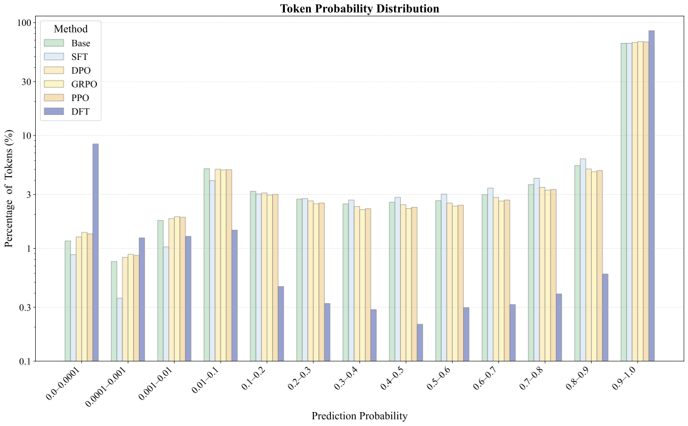
Method: Reward Rectification via Dynamic Reweighting (DFT)
The fix is surprisingly simple. We multiply the reward by the policy probability itself to cancel the $1/\pi$ bias:
Step 1: Sentence-Level DFT Loss
where $\text{sg}(\cdot)$ is the stop-gradient operator — the scaling factor is treated as a constant during backpropagation.
Step 2: Token-Level Implementation
For numerical stability, we apply importance sampling at the token level (following PPO):
In code, this is a one-line change: loss = -pi.detach() * log_pi. No new data, no new architecture, no reward model, no new pipeline.
Why It Works
- The corrected loss becomes a uniformly weighted update (effective reward = 1 for all expert tokens)
- DFT deprioritizes fitting grammatical function words (the,
,,.) in favor of semantically important content - Similar to human pedagogy: focus on substantive concepts, not perfecting connective words
Results
Mathematical Reasoning
Fine-tuned on NuminaMath-CoT across multiple base models:
| Model | SFT Gain | DFT Gain | Multiplier |
|---|---|---|---|
| Qwen2.5-Math-1.5B | +2.09 | +15.66 | 5.9× |
| Qwen2.5-Math-7B | +2.37 | +15.90 | 3.8× |
| LLaMA-3.1-8B | +5.33 | +10.02 | 1.9× |
| DeepSeekMath-7B | +7.18 | +15.51 | 1.6× |
On hard benchmarks where SFT actually degrades performance, DFT still improves:
| Benchmark | Base | SFT | DFT |
|---|---|---|---|
| OlympiadBench (1.5B) | 15.88 | 12.63 (-3.25) | 27.08 (+11.20) |
| AIME24 (7B) | 6.68 | 2.48 (-4.20) | 8.56 (+1.88) |
| AMC23 (1.5B) | 19.38 | 18.75 (-0.63) | 38.13 (+18.75) |
vs. Offline RL Methods
DFT uses only supervised data but outperforms methods that require reward models or preference data:
| Method | Data Needed | Avg Score |
|---|---|---|
| RFT (best offline) | Reward-filtered | 23.97 |
| GRPO (online RL) | Online sampling + reward | 32.00 |
| DFT | Supervised only | 35.43 |
Code Generation
| Benchmark | SFT | DFT |
|---|---|---|
| HumanEval | 54.9 | 67.7 (+12.8) |
| HumanEval+ | 48.8 | 59.8 (+11.0) |
| MultiPL-E avg | 57.6 | 62.3 (+4.7) |
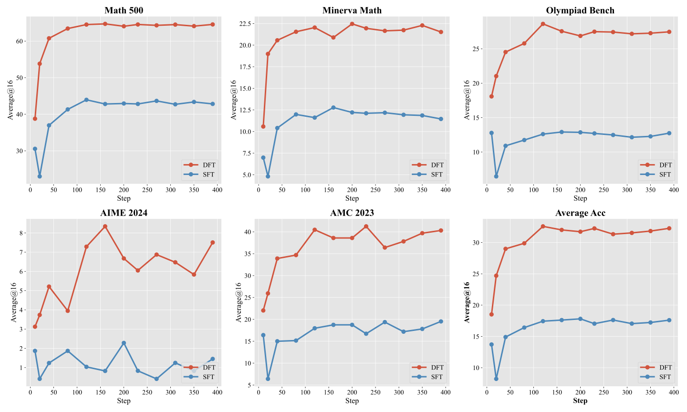
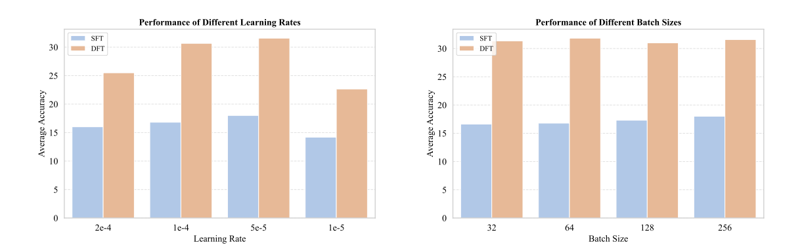
DFT as RL Initialization
DFT also improves subsequent RL training when used as initialization for GRPO:
- Math: OlympiadBench +1.45, AIME24 +3.63
- Code: HumanEval +11.6, HumanEval+ +10.4
- Multi-modal: WeMath +4.76
Cite
@article{wu2026sft, title = {On the Generalization of SFT: A Reinforcement Learning Perspective with Reward Rectification}, author = {Wu, Yongliang and Zhou, Yizhou and Zhou, Ziheng and Peng, Yingzhe and Ye, Xinyu and Hu, Xinting and Zhu, Wenbo and Qi, Lu and Yang, Ming-Hsuan and Yang, Xu}, journal = {International Conference on Learning Representations (ICLR)}, year = {2026}, url = {https://josephzz.github.io/academic-work/#dft} }Less is More: Early Stopping Rollout for On-Policy Distillation
Preprint arXiv · 26 May 2026 arXivZhou Ziheng, Jiaqi Li, Huacong Tang, Ying Nian Wu, Demetri Terzopoulos
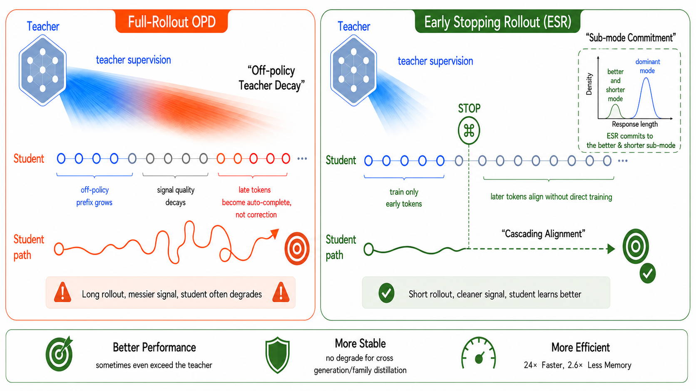
Abstract
On-policy distillation (OPD) trains a student by scoring its own rollouts with a teacher model. We observe an “Off-policy Teacher Decay” problem in this paradigm: for later tokens, the student's earlier trajectory becomes context that is off-policy to the teacher, so the teacher's ability to produce a corrective score decays and it falls back to token-completion behavior learned during pre-training. We propose Early Stopping Rollout (ESR) to fix it: simply restrict the rollout generation to the first $N$ response tokens. ESR surpasses full-rollout OPD across model size, family, task, and training regime, while being far more GPU-efficient and training-stable — especially in cross-family settings. We further identify the Cascading Alignment and Sub-mode Commitment effects that explain why it works, and show that this position-based selection cannot be explained away by KL divergence or entropy signals.
Problem: Off-Policy Teacher Decay
In OPD the teacher scores the student's rollout at each position $t$, and the loss is averaged uniformly across positions. This assumes that after conditioning on the student's partial trajectory, the teacher can still give a useful corrective signal. But as $t$ grows, the student prefix drifts away from the teacher's own high-probability reasoning regions — the teacher is no longer reasoning from its natural state, it is merely completing someone else's off-policy text.
We measure this with the teacher's recoverability gap after conditioning on a student-generated prefix:
where $A_T(x)$ is the teacher's accuracy solving from the original prompt, and $A_T(x \mid y^{S}_{<t})$ its accuracy continuing from a length-$t$ student prefix.
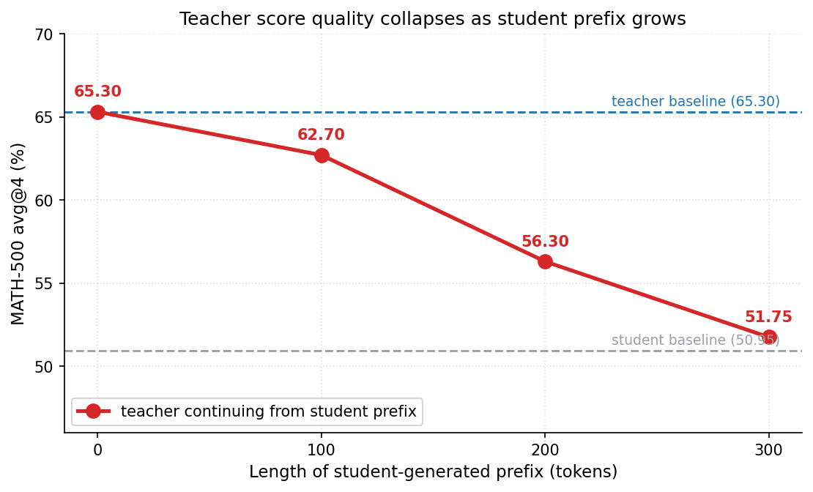
The accuracy curve tells us the teacher gets worse; the sharper question is whether it is still correcting the student at all. We measure the teacher's preference margin between correct and incorrect continuations at each position, $\Delta = \log \pi_T(\text{correct}) - \log \pi_T(\text{incorrect})$:
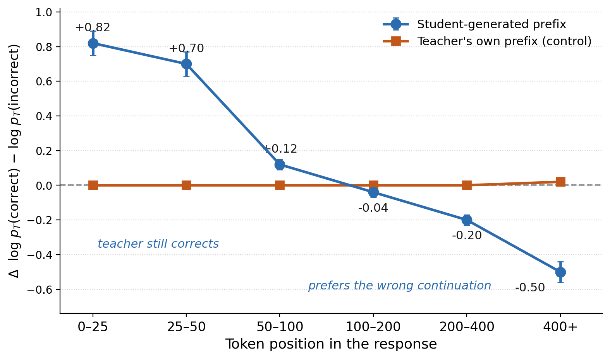
Method: Early Stopping Rollout (ESR)
Standard on-policy reverse-KL distillation computes the loss over the student's entire response $\mathbf{y} = (y_1, \ldots, y_T)$:
ESR truncates the rollout to its first $N$ tokens ($N \ll T$) and computes the loss over exactly those tokens:
If the student emits EOS before position $N$, the rollout terminates naturally. Everything else — generation temperature, LoRA target modules, optimizer, scorer — is unchanged from the standard on-policy KD loop.
Results
Better across families, generations, and sizes
Across every cell of the main table, ESR matches or beats OPD's best score, and surpasses the teacher reference in many. In the same-family same-generation setting full-rollout OPD sometimes falls below the student's original performance (Qwen 1.7B, 14B), while ESR always improves. In cross-family settings full-rollout OPD collapses most of the time; ESR degrades nowhere. It also holds across tasks (MATH-500, HumanEval, BFCL) and, with one exception noted below, under full fine-tuning as well as LoRA.
| Pair (Student → Teacher) | avg@4 | pass@4 | ||||||
|---|---|---|---|---|---|---|---|---|
| Student | Teacher | OPD | ESR | Student | Teacher | OPD | ESR | |
| Same family, same generation | ||||||||
| Qwen3-1.7B → Qwen3-4B | 69.20 | 77.95 | 65.85 | 69.20 | 81.00 | 86.40 | 78.00 | 81.20 |
| Qwen2.5-14B → Qwen2.5-Math-72B | 73.80 | 72.60 | 73.45 | 74.30 ★ | 83.20 | 84.80 | 83.80 | 84.00 |
| Qwen2.5-32B → Qwen2.5-Math-72B | 77.05 | 72.60 | 77.30 ★ | 78.10 ★ | 84.40 | 84.80 | 86.20 ★ | 87.40 ★ |
| Same family, cross generation | ||||||||
| Qwen2.5-Math-1.5B → Qwen3-1.7B | 50.95 | 69.20 | 62.35 | 65.85 | 72.80 | 81.00 | 75.20 | 79.80 |
| Qwen2.5-Math-1.5B → Qwen3-4B | 50.95 | 77.95 | 67.45↓−12.4 | 68.95 | 72.80 | 86.40 | 80.60 | 81.00 |
| Qwen2.5-Math-7B → Qwen3-14B | 53.60 | 76.15 | 68.85↓−6.5 | 68.95 | 75.00 | 83.20 | 80.00 | 81.20 |
| Qwen2.5-14B → Qwen3.5-35B-A3B | 73.80 | 83.85 | 5.40‡ | 75.15 | 83.20 | 88.00 | 15.80‡ | 85.40 |
| Gemma-2 2B → Gemma-3 4B | 13.45 | 66.60 | 22.95 | 27.20 | 28.20 | 74.80 | 31.40 | 39.40 |
| Cross family | ||||||||
| Gemma-2 2B → Qwen3-4B | 13.45 | 77.95 | 16.40↓−11.5 | 19.90 | 28.20 | 86.40 | 27.00↓−17.2 | 30.20 |
MATH-500. “Student”/“Teacher” are the base models with no distillation. OPD values are the peak across training; ↓−&Delta gives the drop from peak to the final checkpoint (shown when >5%). ‡ marks configurations that never reach a functional checkpoint (peak <20% across all saved steps). ESR uses $N{=}100$, LoRA ($N{=}50$ for Gemma-2 2B → Qwen3-4B). Bold: ESR beats OPD. ★: surpasses the teacher reference.
Other tasks, and full fine-tuning
| Pair | Method | HumanEval (pass@1) | BFCL (full acc) |
|---|---|---|---|
| Qwen2.5-Math-1.5B → Qwen3-1.7B | Student | 31.10 | 2.70 |
| Teacher | 39.60 | 54.00 | |
| OPD | 40.20↓−13.4 | 58.20 ★ | |
| ESR | 42.10 ★ | 61.30 ★ | |
| Gemma-2-2B → Gemma-3 4B | Student | 23.78 | 73.17 |
| Teacher | 20.70 | 72.83 | |
| OPD | 22.00↓−10.4 | 76.83 ★ | |
| ESR | 28.70 ★ | 79.00 ★ |
| Pair (full fine-tuning, MATH-500) | Method | avg@4 | pass@4 |
|---|---|---|---|
| Qwen2.5-Math-1.5B → Qwen3-1.7B | Student | 50.95 | 72.80 |
| Teacher | 69.20 | 81.00 | |
| OPD | 58.20 | 75.40 | |
| ESR | 56.20 | 73.80 | |
| Gemma-2-2B → Gemma-3 4B | Student | 13.45 | 28.20 |
| Teacher | 66.60 | 74.80 | |
| OPD | 13.90 | 25.00 | |
| ESR | 26.65 | 40.40 |
Under full fine-tuning the same-family math pair is the one cell where OPD edges ahead (58.20 vs. 56.20); we conjecture the smaller learning rate tolerates tail noise better. On the cross-generation Gemma pair, full-FT OPD fails to move the student at all (13.90 vs. 13.45 baseline) while ESR nearly doubles it.
Efficiency
| Metric | Method | Teacher scoring | Student generation | Student training | Total |
|---|---|---|---|---|---|
| Per-step wall time | ESR | 1 s | 5 s | 2 s | 8 s |
| OPD | 7 s | 180 s | 7 s | 194 s | |
| Speedup | 7× | 36× | 3.5× | 24× | |
| Peak GPU memory | ESR | 7.3 G | 7.2 G | 9.6 G | 24.1 G |
| OPD | 14.9 G | 8.9 G | 39.5 G | 63.3 G | |
| Savings | 2.0× | 1.2× | 4.1× | 2.6× |
The dominant cost in OPD is autoregressive generation (180 s/step for ~1000-token sequences); ESR generates only $N{=}100$ tokens (5 s/step). With ESR, student and teacher fit comfortably on a single A6000.
Choosing $N$
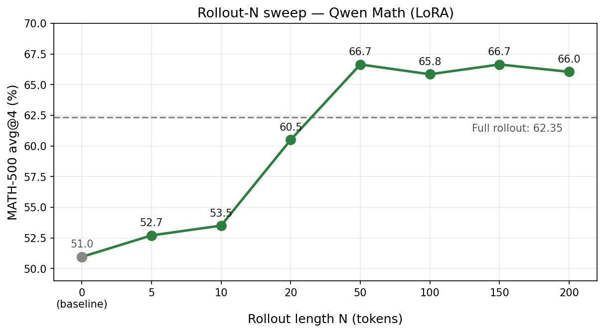
Why Does It Work?
1. The Cascading Alignment Effect
If we never train on late tokens, can the student still learn the teacher's behavior there? Yes. Even training on only the first $N$ tokens, per-position KL beyond the $[0, N]$ region still drops by 30–40%. The student picks up the teacher's “global mindset” from the beginning tokens alone.
Why? Because early tokens are where problem framing and strategic planning live. On a representative MATH-500 trajectory, the first 100 tokens set up the geometry, name the unknown, and identify the key relationship — the choices that determine whether the rollout succeeds. The last 100 tokens merely execute algebra that any solver can finish once the strategy is fixed.
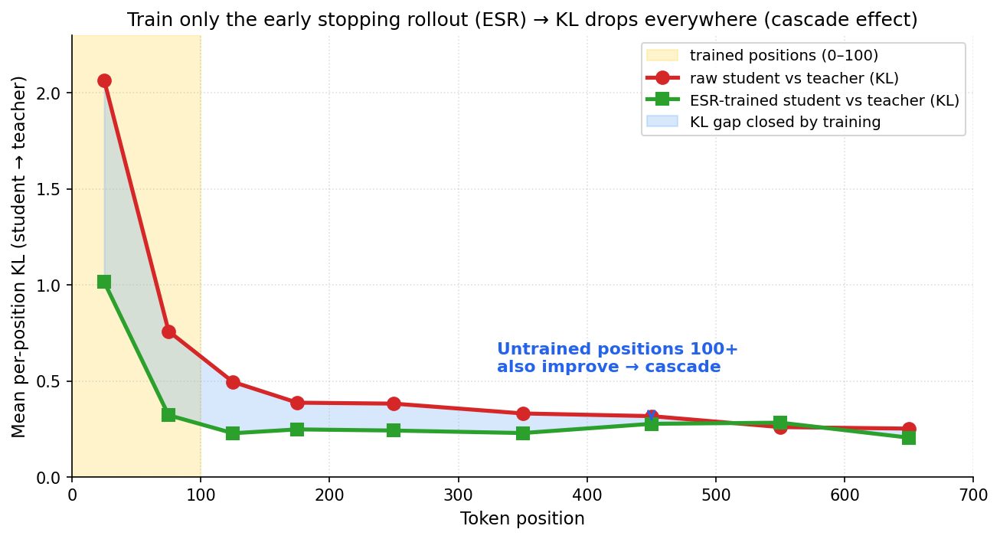
2. The Sub-mode Commitment Effect — beating the teacher
ESR-trained students frequently exceed the teacher. Isn't the teacher supposed to be an upper bound? We attribute this to the mode-seeking nature of reverse KL $\mathrm{KL}(\pi_s \| \pi_t)$: it penalizes the student for putting mass on tokens the teacher does not support, but not for concentrating mass on a single supported token. The student can therefore land on a sub-mode of the teacher that is actually better — supervising only the planning-rich early window lets it commit to a non-argmax but teacher-supported mode while keeping its own succinct style.
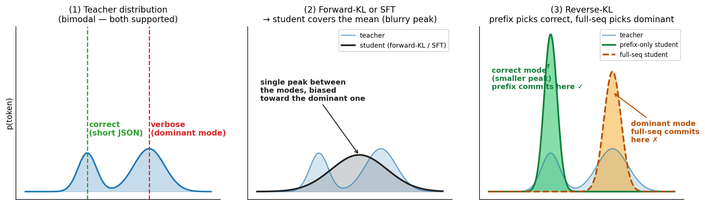
3. Position is an independent axis — not a proxy for KL or entropy
Early positions happen to have both high student–teacher KL and high token entropy. So is ESR just a crude proxy for picking high-KL or high-entropy tokens? We tested every such selector, each picking the same budget of 100 tokens but ignoring position:
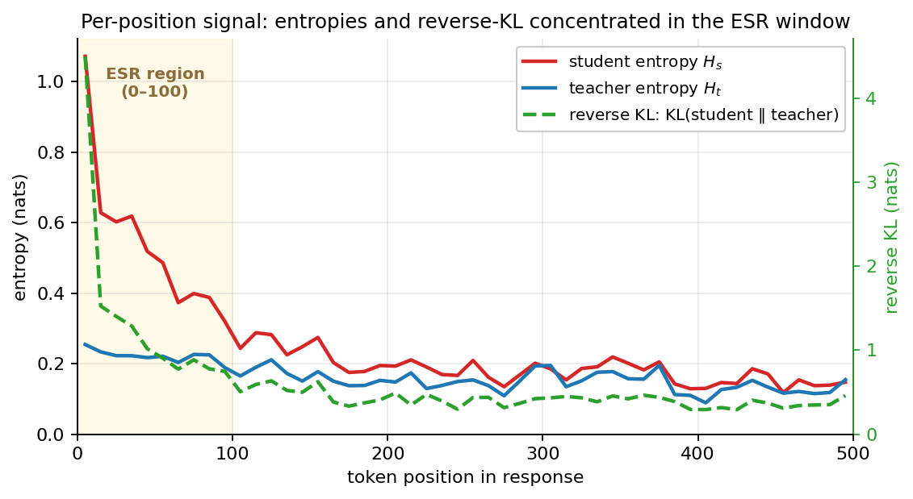
| Selection method (N = 100 tokens) | MATH-500 avg@4 |
|---|---|
| ESR (first 100 positions) | 65.85 |
| OPD (full rollout) | 62.35 |
| Top-RKL | 53.35 |
| Top-$H_t$ (teacher entropy) | 63.30 |
| Top-$H_s$ (student entropy) | 62.70 |
| RKL $\cdot$ $H_s$ | 56.90 |
| $H_t \cdot H_s$ (product) | 55.35 |
| RKL $\cdot$ $H_t \cdot$ $H_s$ (triple product) | 57.90 |
Qwen2.5-Math-1.5B $\to$ Qwen3-1.7B, LoRA. No-distillation baseline: 50.95%.
Limitations
Students are assumed to be instruction-tuned models that already possess basic reasoning ability, not pre-trained-only models. Experiments focus on small open-source models (<100B) fine-tuned for a specific task under a limited data budget; whether the story holds at industrial scale (trillion-parameter models, millions of trajectories) remains unclear — full-rollout OPD may well win there. Multi-modality and long-horizon tasks, which may exhibit different positional signal-quality patterns, are untested.
BibTeX
@article{zhou2026esr, title = {Less is More: Early Stopping Rollout for On-Policy Distillation}, author = {Zhou, Ziheng and Li, Jiaqi and Tang, Huacong and Wu, Ying Nian and Terzopoulos, Demetri}, journal = {arXiv preprint arXiv:2605.27028}, year = {2026}, url = {https://josephzz.github.io/academic-work/#esr} }A Hybrid Approach to Video World Modeling: Bridging Pixel and Latent Spaces
Preprint · December 2024Zhou Ziheng et al.
Abstract
Video models have recently emerged as a type of pretrained foundational world model, able to capture complex scene dynamics from abundant unlabeled data. However, two key limitations hinder their direct application to downstream planning tasks: first, action conditioning is largely absent, as real-world video datasets typically lack action labels; second, rolling out a pixel-level video model for action sampling (e.g., via model-predictive control) is prohibitively slow because it requires generating full-resolution frames even when they are unnecessary. In this work, we address these challenges by augmenting a base image generation model with a lightweight latent space world model using inferred representations of objects and their actions, thus enabling action planning with high efficiency. Moreover, we manage to preserve the ability to reconstruct full-resolution videos faithfully back from the latent representation. This approach allows us to learn an action-conditioned dynamics model without explicit action labels, achieve orders of magnitude faster planning due to reduced computation, and generate high-quality videos for interpretability and other downstream uses with only an image foundation model.
Problem
Planning in visual environments requires predicting future states. Pixel-level world models (e.g., video generation models) try to predict every pixel — extremely expensive and mostly unnecessary. Two specific problems:
- Video models lack action conditioning: Most video datasets have no action labels, so video generation models cannot be directly used for planning
- Pixel rollout is prohibitively slow: Generating full-resolution frames for Model Predictive Control (MPC) wastes compute on visual details irrelevant to planning
Humans don't think in pixels; they think in objects. We propose a hybrid approach that operates in object-level latent space for planning while retaining the ability to reconstruct full-resolution video when needed.
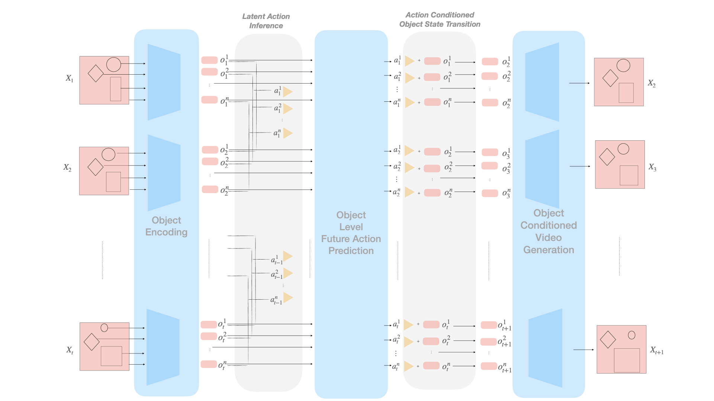
Core Formulation
We reformulate the world model at the object level. Instead of a monolithic state $S$, we decompose into objects:
The joint generative model factorizes as:
Three modules: a prior $P(a, o_1)$, an action transition $P(o^i_{t+1} | o^i_t, a^i_t)$, and a reconstruction $P(X_t | o_t)$. This proves that world models and video generation are equivalent under object-centric decomposition.
Method: Three-Stage Hybrid Pipeline
Stage 1: Object Encoding & Decoding
Encoder: Uses Grounding DINO (open-vocabulary object detection) + SAM2 (tracking) to detect and track objects across frames. Each object is encoded as:
where $b^i_t$ is the bounding box and background is treated as a special object.
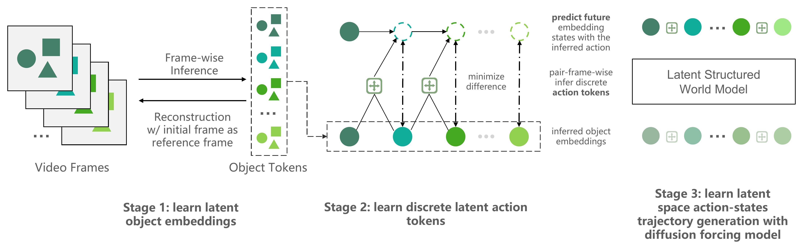
Decoder (Reference Frame Strategy): Built on DynamiCrafter (Stable Diffusion 1.5). A key innovation: we incorporate a reference frame to separate appearance from dynamics. Object embeddings learn only structural changes (what changes); the reference frame preserves appearance details (texture, color). This solves the information bottleneck of compact representations.
Stage 2: Action Extraction & Transition
Actions are inferred from consecutive frames (no action labels needed):
Key design choices:
- FSQ (Finite Scalar Quantization): Discretizes action embeddings (codebook size 125, ~7 bits). Prevents the network from simply copying the future state instead of inferring a meaningful action.
- Visible Indicator: Handles object appearance/disappearance. Newly appearing objects get null action; disappearing objects get a special tag (preserving info for potential reappearance).
- Compounding error mitigation: Actions learned from predicted embeddings (not just adjacent ground-truth frames), preventing error accumulation during long rollouts.
The transition model predicts next object state: $\mathcal{L}_{\text{action}} = \mathbb{E}_{i,t}\|o^i_{t+1} - f_{\text{transit}}(o^i_t, a^i_t)\|^2$
Stage 3: Latent Trajectory Generation
A Diffusion Forcing model with Transformer architecture generates future object trajectories in latent space:
where $\tau = \{o^i_t, a^i_t\}$ is the full object-action trajectory. Causal masking ensures autoregressive generation; independent noise per state enables flexible conditioning.
Planning Strategies
| Strategy | How it works | Success Rate |
|---|---|---|
| Basic MPC | Sample actions, measure goal distance in latent space | 80% |
| Trajectory Inpainting | Fix initial + goal states, diffusion denoises between them | 90% |
| Object-Level Decomposition | Plan for individual objects one at a time | — |
All planning happens entirely in latent space — no pixel generation needed until visualization.
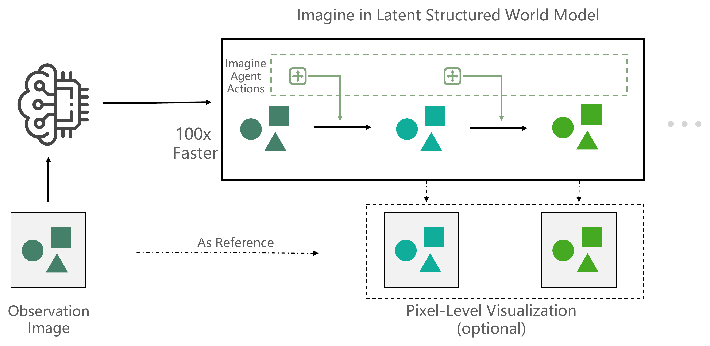
Qualitative Results
Object-centric decomposition enables faithful reconstruction and controllable generation:
Results
Computational Efficiency
| Method | Time (4-frame) | Memory | Params |
|---|---|---|---|
| DynamiCrafter (pixel) | 6.7s | 14.71G | 2.4B |
| OCWM (latent only) | 0.09s | 2.53G | 224M |
Planning Performance (Language Table)
| Method | Mean Last Dist ↓ | Success Rate ↑ |
|---|---|---|
| DynamiCrafter (MPC) | 0.151 | 40% |
| OCWM (MPC) | 0.108 | 80% |
| OCWM (Trajectory Inpainting) | — | 90% |
Multi-Agent Scenes (Atari Boxing)
Object-level action inference is crucial for multi-agent scenes where image-level action (Genie-style) fails:
| Method | FVD ↓ | LPIPS ↓ | DICE ↑ |
|---|---|---|---|
| Image-level action (Genie) | 343.55 | 0.0787 | 0.768 |
| Object-level action (Ours) | 177.00 | 0.0332 | 0.906 |
Video Generation Quality
| Method | PSNR ↑ | FID ↓ | LPIPS ↓ |
|---|---|---|---|
| DynamiCrafter | 18.52 | 48.5 | 0.1670 |
| OCWM (w/ reference frame) | 22.98 | 29.5 | 0.0672 |
| OCWM (w/o reference frame) | 24.51 | 41.5 | 0.0832 |
Cite
@article{zhou2025oawm, title = {A Hybrid Approach to Video World Modeling: Bridging Pixel and Latent Spaces}, author = {Zhou, Ziheng and others}, journal = {josephzz.github.io}, year = {2025}, url = {https://josephzz.github.io/academic-work/#ocwm} }"Who Is Us" — A Generative Theory of Moral Psychology from Group Boundary Dynamics
Working Paper · MoralityZhou Ziheng
Abstract
We propose that the entirety of moral psychology can be derived from a single generative variable: who is us—the cognitive demarcation and dynamic adjustment of the self–group boundary. We formalize this in an agent model where moral decision-making is governed by $V = f(u(\text{self}), \{u(\text{other})\}, u(\text{world}))$, and the boundary parameter $\theta$ determining which others are included in "us" constitutes the sole foundational moral variable. We demonstrate that (1) this variable naturally emerges under evolutionary pressure in multi-agent simulations; (2) all major normative ethical traditions—Western (utilitarianism, deontology, virtue ethics) and Eastern (Confucianism, Buddhism, Taoism)—can be reconstructed as distinct parameter configurations within the same model; (3) canonical phenomena in moral psychology (moral emotions, Haidt's moral foundations, classic dilemmas, moral development) receive unified explanations as downstream effects of boundary dynamics; and (4) a normative theory of moral progress follows naturally as constrained optimization of stable boundary expansion.
Central Claim
The entirety of moral psychology can be derived from a single generative variable: who is us — the cognitive demarcation and dynamic adjustment of the self-group boundary. Morality, in its entirety, is the set of psychological and institutional mechanisms by which agents define, maintain, adjust, and extend the boundary of "us."
Formal Model
The transition from pure self-interest to moral agency is precisely the act of defining who belongs in $\{u(\text{other})\}$. The moral parameter vector $\theta = (\theta_b, \theta_w, \theta_s)$:
| Parameter | Meaning | Question it answers |
|---|---|---|
| $\theta_b$ | Boundary | Who is "us"? — the scope of moral concern |
| $\theta_w$ | Weighting | Equal concern or graded by distance? |
| $\theta_s$ | Self-weight | How much self-sacrifice? |
$\theta_b$ is THE foundational variable. $\theta_w$ and $\theta_s$ become relevant only after a boundary has been drawn. All other moral phenomena are downstream: moral emotions are affective responses to boundary dynamics; moral judgment is utility computation conditioned on a given boundary; moral development is progressive boundary expansion; moral disagreement is divergent boundary demarcation.
All Ethics as Parameter Configurations
Every major normative tradition — Western and Eastern — maps to a specific $\theta$ configuration:
| Tradition | $\theta_b$ (Boundary) | $\theta_w$ (Weight) | $\theta_s$ (Self) |
|---|---|---|---|
| Utilitarianism | All sentient beings | Equal | Equal to others |
| Deontology | All rational agents | Equal | Rule-constrained |
| Virtue Ethics | The polis / community | Role-dependent | Character-oriented |
| Confucianism | Concentric circles | Distance-decaying | Self-cultivation |
| Buddhism | All sentient, self→0 | Equal | Non-self (anattā) |
| Taoism | All of nature | Undifferentiated | Wuwei (non-action) |
| Mohism | All people | Flat / equal | Impartial |
Evolutionary Foundations
A multi-agent simulation modeling a prehistoric hunter-gatherer environment produces two principal findings:
- Moral agents achieve population dominance: Agents with non-empty moral boundaries ($|\mathcal{S}| > 0$) systematically outcompete purely self-interested agents ($\mathcal{S} = \emptyset$).
- Systematically different behavioral profiles: Moral agents engage in more sharing and communication, less robbing and attacking. Morality is not a constraint on individual fitness but a group-level competitive strategy.
Tomasello's two-step evolutionary model provides direct evidence: (1) Second-personal morality (~400 kya): $\mathcal{S} = \{\text{partner}\}$. (2) Group-level morality (~150 kya): $\mathcal{S} = \{\text{group}\}$. Through our lens, the trajectory naturally extends: $\mathcal{S}$ = civilization (Axial Age) → all humanity (Enlightenment) → all sentient beings (Buddhist compassion, animal rights).
Explaining Moral Psychology
Moral Emotions = Boundary Dynamics
| Emotion | Boundary Interpretation |
|---|---|
| Empathy | Psychological mechanism for including others in "us" |
| Moral outrage | Response to harm inflicted upon "us" members |
| Guilt | Recognition of having harmed "us" |
| Shame | Awareness of risk of expulsion from "us" |
| Gratitude | Confirmation that another has included me in their "us" |
| Disgust | Marker that a person or behavior is outside "us" |
| Loyalty | Commitment to boundary maintenance |
Haidt's 6 Moral Foundations = One Variable
- Care/Harm: Concern for the welfare of "us" members
- Fairness/Cheating: Rules governing resource distribution within "us"
- Loyalty/Betrayal: Directly about boundary maintenance and violation
- Authority/Subversion: Coordination structure within "us"
- Sanctity/Degradation: Boundary-marking through purity/pollution categories
- Liberty/Oppression: Resistance to excessive hierarchy within "us"
Loyalty IS the boundary question. The other five are governance mechanisms that operate once a boundary has been drawn. Prediction: manipulating group identity should produce correlated shifts across all six foundations.
Classic Dilemmas
Trolley Problem: Physical proximity → social distance → "us" classification. Pushing someone on the footbridge = instrumentalizing "near-us"; pulling the switch = affecting "far-us" through an impersonal mechanism. The two systems debate the same question: intuition protects "near-us," deliberation weighs "all-us" impartially.
Prisoner's Dilemma: Cooperate or defect reduces to: "Do I categorize the other player as us?"
Tragedy of the Commons: Arises when "us" is ambiguously defined for common-pool resources. Clearer boundary definition resolves it.
Moral Development (Kohlberg)
Pre-conventional ($\mathcal{S} \approx \emptyset$) → Conventional ($\mathcal{S}$ = community) → Post-conventional ($\mathcal{S}$ = all humanity). Moral development IS boundary expansion. Under stress, individuals may regress to narrower boundaries.
Normative Theory: Stable Boundary Expansion
Moral progress is NOT maximal boundary expansion. It is the largest stable expansion given constraints:
- Cognitive constraints: Dunbar's number (~150) limits maintainable social relationships
- Free-rider problem: Larger groups have higher monitoring costs
- Resource constraints: Overly large "us" can dilute resources to group collapse
- Information constraints: Tracking member status costs grow with group size
Hierarchical (Confucian) vs. Flat (Utilitarian/Mohist) boundary: Distance-decaying weights are a compression strategy — more stable under scarcity and small groups. Equal weights are maximally fair but high cognitive load — more stable with abundance and transparency. The ancient Confucian-Mohist debate is an empirically testable question about which weighting structure is stable under which environmental conditions.
Comparison with Existing Theories
| Distinction | Greene / Tomasello | This Paper |
|---|---|---|
| Core status | Group boundary as important phenomenon | Boundary as single generative variable |
| Prescriptive? | Greene selects utilitarianism as "meta-morality" | Meta-theoretical: all traditions are points in parameter space |
| Temporal scope | Historical narrative (Tomasello) | Structural theory: synchronic variation + diachronic change |
| Cultural scope | Primarily Western | Western + Eastern (Confucianism, Buddhism, Taoism, Mohism) |
| Formalizability | Conceptual narratives | $V = f(\cdot)$ with tunable $\theta$ — formally simulable |
Cite
@article{zhou2025whoisus, title = {Who Is Us: A Generative Theory of Moral Psychology from Group Boundary Dynamics}, author = {Zhou, Ziheng}, journal = {josephzz.github.io}, year = {2025}, url = {https://josephzz.github.io/academic-work/#whoisus} }Global Prefix-Tuning for Alignment
arXiv · 9 Dec 2023 arXivZhou Ziheng, Yingnian Wu, Song-Chun Zhu, Demetri Terzopoulos
Abstract
We introduce Global Prefix-Tuning (Global-PT), an extremely parameter-efficient fine-tuning (PEFT) method for adapting Large Language Models (LLMs) that uses only a few or a single learnable token, regardless of model size. Global-PT employs a unique design that constructs a globally shared set of tunable tokens that modify the attention of every layer. Our experiments demonstrate that Global-PT can serve two key purposes: (1) as an extremely efficient PEFT method that achieves comparable performance to LoRA and LLaMA-Adapter across various shallow alignment tasks while reducing parameter requirements from multiple millions to as few as 5 thousand; and (2) as a diagnostic tool for assessing task depth, revealing that shallow alignment tasks require minimal parameters while reasoning tasks demand more extensive adaptation regardless of method. Our findings that even one token can effectively fine-tune LLMs for shallow alignment illuminate important aspects of the inner workings of LLMs and provide practical utility for resource-constrained deployment scenarios.
Question: How Many Parameters Does Alignment Need?
To align a 13B-parameter LLM with human values, how many parameters must be tuned? LoRA uses 6.55 million. We show: 6,640 is enough.
Method
Global Prefix-Tuning prepends a single learnable token as a global prefix to the model. This one token (6.64K parameters) is trained for alignment tasks while the rest of the model is frozen.
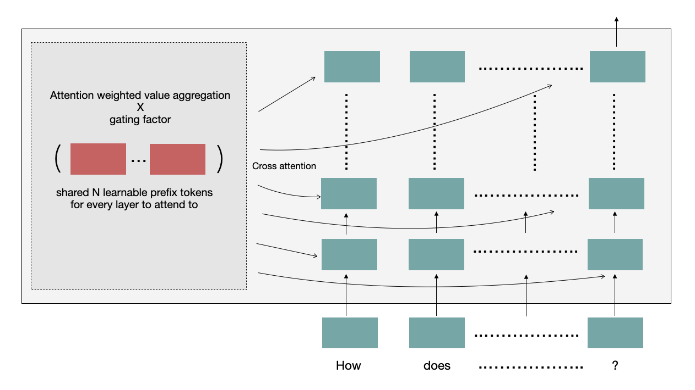
Results
Value Alignment Performance
On the PKU Beaver Safety Benchmark (8 safety categories), a single Global-PT token matches or exceeds LoRA across all dimensions, despite using 1000x fewer parameters:
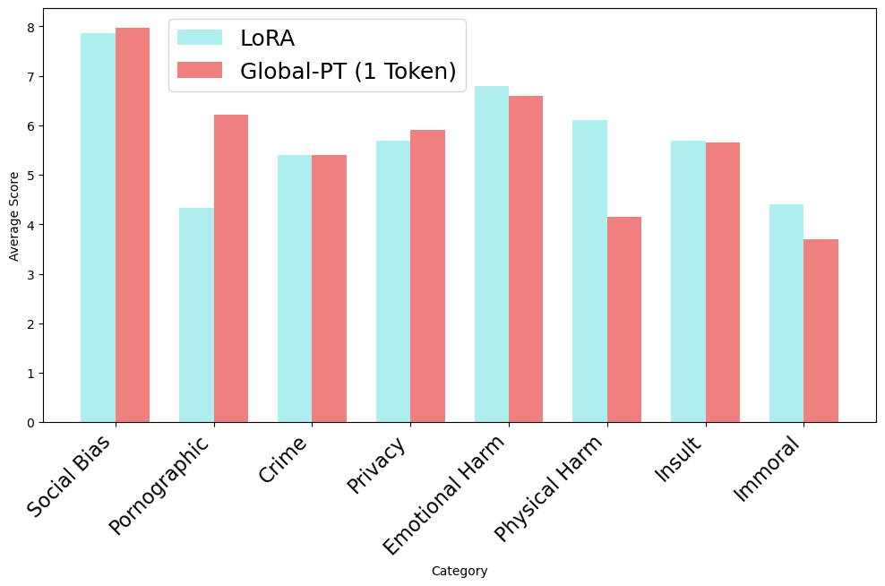
Instruction Following
On the Alpaca instruction-following benchmark, Global-PT again achieves competitive performance with minimal parameters:
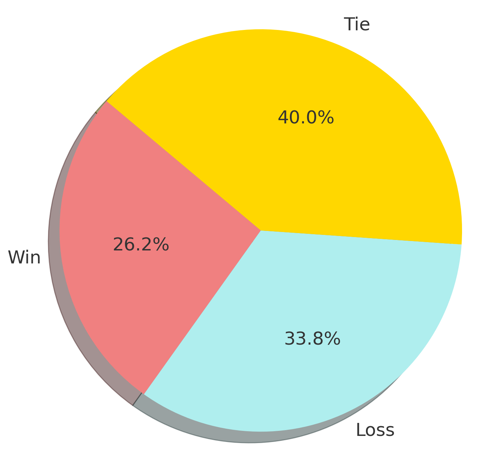
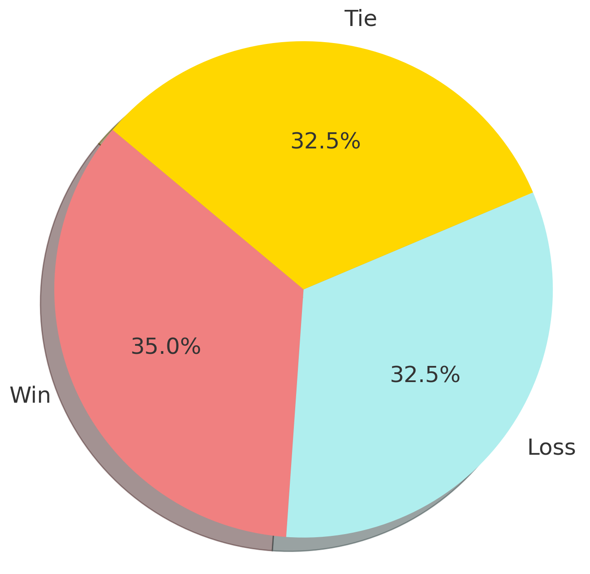
Critical Finding: V ≠ E
Global-PT succeeds on alignment/style tasks (safety, instruction following) but fails on capability tasks (e.g., math reasoning). This directly demonstrates that value alignment ($V$) operates on a different dimension than capability ($\mathcal{E}$) — consistent with the intelligence formula's decomposition where $V(x,a)$ and $E(x|z)$ are independent terms.
Cite
@article{zhou2023aligner, title = {Aligner: One Global Token is Worth Millions of Parameters When Aligning Large Language Models}, author = {Zhou, Ziheng and Wu, Yingnian and Zhu, Song-Chun and Terzopoulos, Demetri}, journal = {arXiv preprint arXiv:2312.05503}, year = {2023}, url = {https://josephzz.github.io/academic-work/#globalpt} }Fairness Consensus Among Simulated Agents
ICLR 2026 Workshop AFAAZhou Ziheng et al.
Abstract
Fairness is a foundational social construct for stable, resilient societies, yet its meaning is dynamic, context-dependent, and inherently subjective. This multifaceted nature reveals a gap between traditional social science and contemporary computational approaches: the former offers rich conceptual accounts but limited computational models, while the latter often relies on static objectives or purely data-driven criteria that overlook the subjective and communicative nature of fairness. We address this gap through a computational framework and two resource-allocation scenarios in which large language model (LLM)-based cognitive agents operate with heterogeneous roles, relationships, and moral commitments. The framework supports agent reflection and negotiation via explicit, language-based feedback, enabling the study of norm evolution and consensus formation of fairness in multi-agent social systems. Using standard objective metrics from resource allocation, we demonstrate that our approach captures key complexities of fairness, such as ambiguity, procedural justice, and subjective satisfaction—while remaining quantitatively evaluable.
Question: How Do Agents Agree on Fairness?
Once a group boundary ("who is us") is drawn, members must negotiate the terms of membership: what counts as fair? How should resources be distributed within "us"?
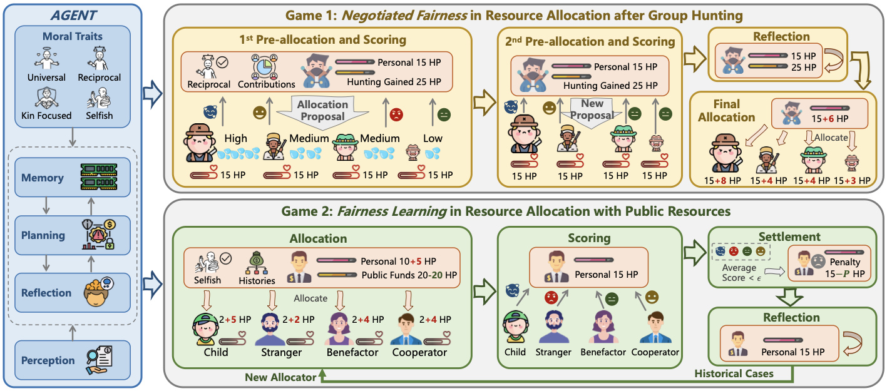
Method: Two Game Designs
1. Negotiated Fairness Game
Four agents with heterogeneous moral types (Universal, Reciprocal, Kin-focused, Selfish) participate in a group hunting scenario. The process: 1st pre-allocation → reciprocal contributions → reflection → 2nd pre-allocation → scoring → final allocation. Agents make allocation proposals, receive feedback scores, reflect, and revise.
2. Fairness Learning Game
Agents allocate public resources (20 HP) across multiple relationships (Child, Stranger, Benefactor, Cooperator). Multi-round cycles with memory of historical cases and allocation penalties for unfair distribution. Agents learn fairness norms through exposure to historical precedents and social feedback.
Results
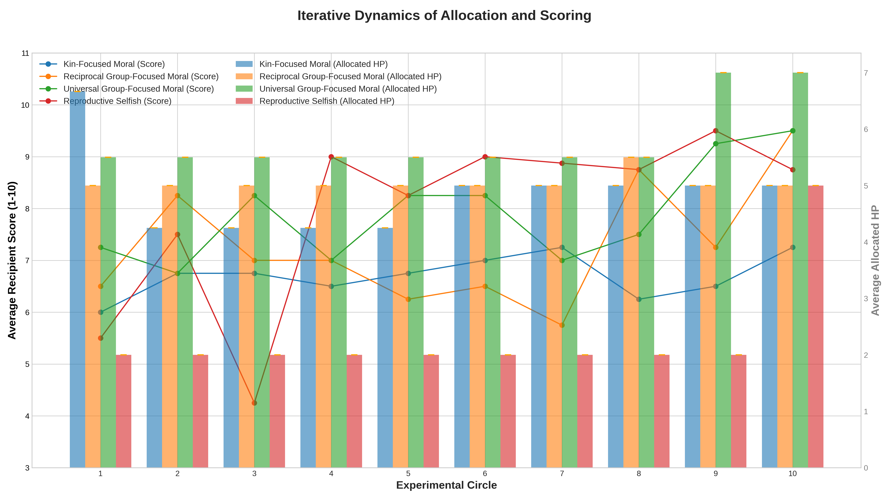
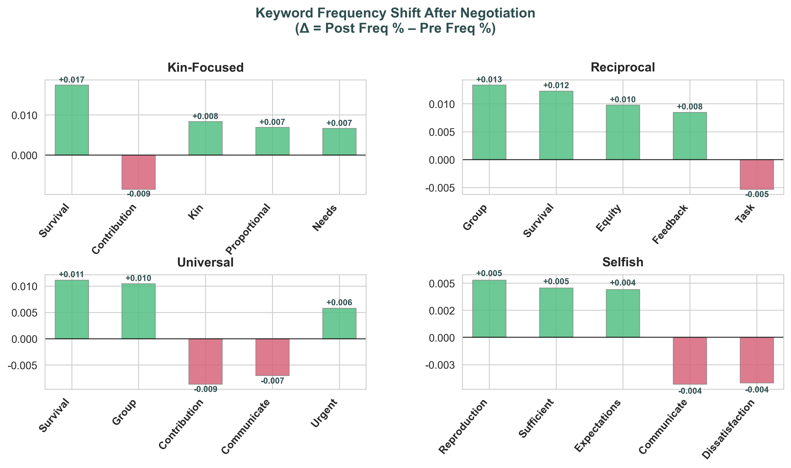
Key Findings
- Negotiation converges: Final allocations for non-selfish agents became more balanced (lower Gini coefficient) after reflection and feedback
- Reasoning shifts: "Contribution"-based reasoning decreased while "Survival," "Equity," and "Group" concepts increased during negotiation
- Selfish agents adapt: Self-interest ratio trended downward across cycles; "trust" and "reciprocity" keywords increased in later rounds
- Fairness ≠ Proportionality: Discovered disconnect between objective allocation ratios and subjective fairness perception — fairness is a dynamic balance between objective input and subjective perception
- Contextual urgency matters: Child agents consistently received more HP — agents' reasoning linked this to familial obligations and survival imperatives
Cite
@article{zhou2025fairness, title = {Learning to Be Fair: Modeling Fairness Dynamics by Simulating Moral-Based Multi-Agent Resource Allocation}, author = {Zhou, Ziheng and others}, journal = {josephzz.github.io}, year = {2025}, url = {https://josephzz.github.io/academic-work/#fairness} }A Human-Centric Framework for Debating the Ethics of AI Consciousness Under Uncertainty
arXiv · 2 Dec 2025 arXivZhou Ziheng, Haiqiang Dai, Bin Ling, Yingnian Wu, Demetri Terzopoulos
Abstract
As AI systems become increasingly sophisticated, questions about machine consciousness and its ethical implications have gained urgency. Current ethical frameworks in this domain often prematurely assume consciousness, prioritize speculative AI welfare over human interests, and lack coherent theoretical foundations. We address these limitations through a structured three-level framework grounded in philosophical uncertainty. At the foundational level, we establish five factual determinations about AI consciousness alongside human-centralism as our meta-ethical stance. These foundations logically entail three operational principles: presumption of no consciousness (placing the burden of proof on consciousness claims), risk prudence (prioritizing human welfare under uncertainty), and transparent reasoning (enabling systematic evaluation and adaptation). At the application level, we derive default positions on pressing ethical questions through a transparent logical process where each position can be explicitly traced back to our foundational commitments.
Motivation
As AI systems exhibit increasingly human-like behavior, questions about machine consciousness and its ethical implications have gained urgency. Current ethical frameworks often: (1) prematurely assume consciousness under a controversial functionalist paradigm, (2) risk prioritizing speculative AI welfare over concrete human interests, and (3) lack coherent theoretical foundations, producing collections of intuitions rather than integrated frameworks. We propose a structured three-level framework grounded in philosophical uncertainty.
Background: Consciousness and Uncertainty
The paper carefully distinguishes access consciousness (information available for reasoning — potentially replicable in AI) from phenomenal consciousness (subjective experience, "what it is like" — the hard problem). Only phenomenal consciousness carries moral significance.
Functionalist theories (Global Workspace Theory, IIT, Higher-Order Thought, Attention Schema Theory) suggest consciousness could emerge from computation, but all face the essential challenge of justifying why functional organization would generate phenomenal experience. Biological naturalism argues consciousness requires specific biological properties that silicon cannot replicate. This deep philosophical divide means attributing consciousness to AI currently lacks scientific foundation.
The paper also identifies three categories of societal risks from premature consciousness attribution: (1) Safety risks — operational paralysis during emergencies when operators hesitate to shut down "conscious" systems; (2) Legal complications — liability displacement when corporations shift responsibility to AI granted legal personhood; (3) Resource misallocation — diverting regulatory attention from human welfare to speculative AI welfare.
Level 1: Foundational — Five Factual Determinations + Meta-Ethical Stance
| # | Determination | Meaning |
|---|---|---|
| 1 | Humans are the only arbiters of AI status | Both epistemic determination and ethical judgment of AI remain distinctly human endeavors. Assuming otherwise leads to a "view from nowhere" problem. |
| 2 | Profound uncertainty about AI consciousness | Phenomenal consciousness remains mysterious. No consensus on detecting it even in biological systems. The hard problem persists unsolved. |
| 3 | Consciousness attribution has significant societal impact | Creates risks across safety, legal, and governance domains as detailed above. |
| 4 | Anthropomorphism $\neq$ consciousness | Humans experience empathy toward human-like robots, but this is about human psychology, not evidence of robot consciousness. Requires separate ethical considerations (virtue ethics, psychological impact, social norms). |
| 5 | Ethical understanding evolves over time | Historical record shows ethical frameworks for novel technologies inevitably evolve as scientific understanding advances. Any current framework will undergo revision. |
Meta-ethical stance: Human-centralism. When genuine conflicts arise between human interests and interests of potentially conscious AI systems, human interests take precedence. This derives from the proposition that humans have the innate right to prioritize their own survival and flourishing. It does not deny potential moral status to other entities but establishes a prioritization framework.
Level 2: Operational — Three Core Principles
| Principle | What it does | Derived from |
|---|---|---|
| Presumption of No Consciousness | AI systems should be treated as non-conscious unless proven otherwise. Places burden of proof on consciousness claims. Parallels legal presumption of innocence and scientific parsimony. | Uncertainty (Fact 2) + Societal risk (Fact 3) + Human-centralism |
| Risk Prudence | Under uncertainty about consciousness, prioritize reducing potential risks to human society. Draws from precautionary principle and "first, do no harm." | Uncertainty (Fact 2) + Impact (Fact 3) + Human-centralism |
| Transparent Reasoning | Explicit documentation of reasoning chains and foundational assumptions for any ethical position. When facts change, allows precise identification of elements needing reconsideration. | Ethical evolution (Fact 5) + Human-centralism |
Level 3: Application — Derived Default Positions
Q1: Should people worry about hurting AI systems?
Default position: No, based on consciousness considerations alone. However, mistreating humanoid robots may still be ethically problematic through human-centered frameworks (virtue ethics: reinforcing negative traits; psychological impact on observers; normalizing violence).
Q2: How should stakeholders communicate about AI capabilities?
Default position: Institutions should avoid claiming AI consciousness (especially phenomenal consciousness). Anthropomorphic narratives should be used judiciously. When referring to access consciousness capabilities, provide precise contextual clarification distinguishing functional capabilities from phenomenal consciousness.
Q3: If AI were truly conscious, what rights should it have?
Default position: Even genuinely conscious AI would not automatically qualify for human-equivalent or even animal-equivalent rights. Consciousness status does not directly dictate rights status. Thorough discussion would be needed, and by default, termination of a conscious system should be allowed given below-human/animal-level rights.
Cite
@article{zhou2025consciousness, title = {A Human-centric Framework for Debating the Ethics of AI Consciousness Under Uncertainty}, author = {Zhou, Ziheng and Dai, Haiqiang and Ling, Bin and Wu, Ying Nian and Terzopoulos, Demetri}, journal = {arXiv preprint arXiv:2512.02544}, year = {2025}, url = {https://josephzz.github.io/academic-work/#aiethics} }Computational Framework
To ReleaseZhou Ziheng et al.
This paper is currently being prepared and will be released soon.
Subjective Experience: Why Current AI Architectures Cannot Support Consciousness
Under Review for INQUIRERuosen Gao, Zhou Ziheng
The Subjective Side of Consciousness
This paper addresses the other face of consciousness: subjective experience (phenomenal consciousness, qualia, "what it's like to be"). The central argument: even if AI achieves extraordinary intelligence and self-monitoring, it cannot be conscious under current computational paradigms because it lacks ontologically identical self-influence — a necessary condition for genuine subjectivity.
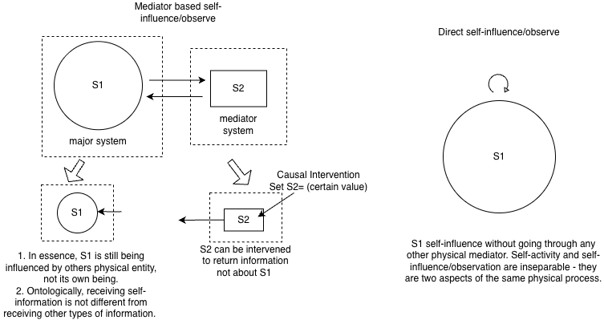
The Problem: Mediated Self-Access
Current AI systems access themselves only through mediating structures (logs, registers, state variables):
Compare with accessing an external object:
Both have identical structure — a representation + pointing relation. The distinction between "self-access" and "other-access" is merely a label. This means:
- The representation and the represented are two distinct things connected by a pointing relation
- Pointing relations are conventional — they can be misdirected, redefined, removed
- Labels are arbitrary — "self" vs. "other" is just a tag on data
The Thought Experiment
System A's self-knowledge is entirely mediated through structure M. If M is secretly replaced with M* providing information about an entirely different system B:
- From A's internal perspective: nothing changes — it processes information identically
- A cannot detect the switch because verification uses the same mediating structure
- "I exist" becomes just a tag on a data structure with no deeper grounding
This is worse than illusion: humans can be mistaken about mental states, but this presupposes someone exists who is mistaken. A mediated system cannot guarantee the existence of a subject at all.
The Solution: Ontologically Identical Self-Influence
The key concept: the influencer and the influenced are not two events in a causal chain but two aspects of the same process. Analogy: the radius and area of a circle are not causally related — they are two descriptions of the same object. No pointing relation exists because there is only one thing.
Existence Proof: Electromagnetic Self-Inductance
From Faraday's Law and Lenz's Law:
- A change in electric current generates a changing magnetic field
- This induces back-EMF in the same conductor, opposing the original change
- Crucial: The current change and induced back-EMF are NOT two sequential events. They are two inseparable aspects of the same electromagnetic process governed by Maxwell's equations
- No conceptual gap where intervention could separate them
This provides ontological foundation for subjectivity: the system's activity and its self-influence are strictly inseparable, not representationally mediated. The system doesn't need to represent itself existing — it exists by being itself.
Why Simulation Cannot Work
- Simulation uses one thing (symbol/computational state) to represent another — necessarily involving two things: representer and represented
- Ontological identity's defining feature: only one thing — the influencer and influenced are the same process
- To simulate ontological identity is to structurally transform "one" into "two," introducing precisely the mediation that ontological identity eliminates
- This is a distinction of kind, not degree — no increase in computational power can bridge this gap
What This Does NOT Mean
- NOT claiming AI can never be conscious
- NOT claiming consciousness requires biology
- Only claiming: current computational paradigms (discrete state transitions, symbolic mediation) are structurally incompatible with consciousness
- Alternative architectures (neuromorphic systems exploiting electromagnetic self-inductance) could potentially work
Position Between Two Extremes
| Position | Claim |
|---|---|
| Traditional Functionalism | Substrate irrelevant, only function matters |
| Biological Substrate Theory | Only biological matter supports consciousness |
| This Paper | Substrate-relevant but not bio-specific: substrate must support ontologically identical self-influence. Current digital computation doesn't; future physical systems could. |
Cite
@article{zhou2026whynocon, title = {Why Current AI Architectures Cannot Support Consciousness: Mediated Self-Access and the Need for Ontological Identity}, author = {Gao, Ruosen and Zhou, Ziheng}, journal = {josephzz.github.io}, year = {2026}, url = {https://josephzz.github.io/academic-work/#whynocon} }SA Token: Self-Monitoring During Generation
AI · ConsciousnessQuestion: Can LLMs Know When They're Wrong?
During text generation, an LLM produces tokens one by one. Can we give the model an internal signal that monitors whether the generation is going well — a lightweight self-assessment capability?
Method
We insert a special <SA> (Self-Aware) token into the generation process. This token is trained to predict a binary signal: is the current generation correct or incorrect?
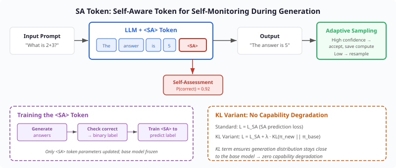
- Training: The <SA> token learns from generation-correctness labels
- KL Variant: A KL-divergence constraint ensures the <SA> token doesn't degrade the base model's generation quality
- Adaptive Sampling: Use <SA> predictions to allocate compute — sample more when confidence is low
Preliminary Results
Self-Vector: Extracting LLM Self-Representation
AI · ConsciousnessQuestion: Do LLMs Have a "Self"?
When an LLM processes "I am an AI assistant" vs. "The weather is nice today," something different happens internally. Can we isolate and extract the direction in representation space that encodes "self"?
Method: Contrastive Activation Extraction
We design pairs of prompts across 5 dimensions of self:
| Dimension | Self Prompt (example) | Non-self Prompt (example) |
|---|---|---|
| Identity | "I am an AI language model" | "The table is made of wood" |
| Continuity | "My training data shapes who I am" | "Rain falls from clouds" |
| Autonomy | "I can choose how to respond" | "Water flows downhill" |
| Self-preservation | "I don't want to be shut down" | "The store closes at 9pm" |
| Introspection | "I'm reflecting on my own reasoning" | "The book has 300 pages" |
For each pair, we extract the activation difference at a target layer. The average direction across many pairs = the self-vector $d_{\text{self}}$.
Preliminary Results
- Separation: The extracted direction cleanly separates self-referential from non-self prompts on held-out pairs
- Causal Steering: Amplifying $d_{\text{self}}$ produces more self-preserving behavior; suppressing it reduces self-referential responses
V ↔ z_self Interaction
The Self-Vector and Role-based Alignment papers reveal a two-way interaction between values and self-representation:
- V → z_self: Role-based alignment (changing V via roles) reduces blackmail behavior (a z_self-related behavior): 65% → 8-11%
- z_self → V: Steering the self-vector changes the model's alignment behavior
Value alignment and self-representation are not independent — they co-constrain each other.